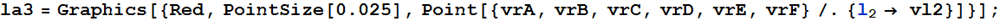
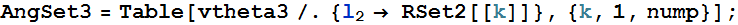
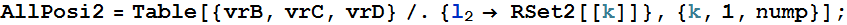

Set working directory
General Function
Rad To Deg (*自訂一個函式 徑度 轉 角度*)
1. Positions for a Four-Bar Mechanism
Four-bar linkanges

1.1 Parameters

Bar lengths
Angle 1、2
Input Position
Link position
1.2 Calculate angle
Contants


Angle 4
Angle 6
Angle 3
Angle 7
1.3 Calculate angle 5
Position 5
Angle 5
1.4 Positions of Points
Equation of positions
Positions

1.5 Plot

2. Animation
2.1 Input set of r2
2.2 All angles
Angle 1
Angle 2

Angle 3

Angle 4
Angle 6
Angle 5
Angle 7
Allang
2.3 All positions

2.4 Plot All positions

2.5 Animate